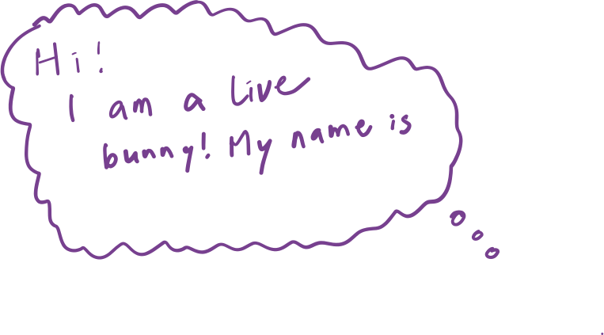

Live Presentations! is about assisting the speakers' live performance at presentation time. This is part of presenter-notes. It's only visible to the presenter. After you say this part, click on it to dismiss it from the presenter view as well.
Trace the outline of the bunny!
Then click the bunny to reveal the underlying bunny.
